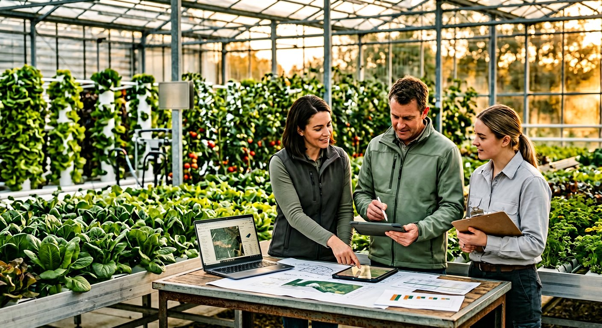

An agritech brand shaped by field realities and premium production goals.
We combine infrastructure thinking, agronomy expertise, and operational discipline to help growers move from pilot ambition to scalable execution.

To make premium farming more predictable, investable, and future-ready.
We work at the intersection of crop quality, resource efficiency, and commercially viable infrastructure — building systems that perform in the real world, not just on paper.
Built around your context, not a fixed package.
Field-first strategy
We shape solutions around climate, crop, and market context instead of selling one-size-fits-all packages.
- Regional suitability
- Crop-specific design
- Execution oversight
Long-term partnerships
Our engagement model is designed for continuity well beyond installation and commissioning.
- Advisory support
- Operational check-ins
- Continuous improvement
Measurable delivery
We track water efficiency, yield uniformity, and team readiness so progress is visible at every phase.
- Clear milestones
- KPI reporting
- Performance reviews
How we operate across teams, farms, and communities.
Precision is only valuable when it is practical, durable, and human-centered.
Responsible Growth
Scale with ecological and financial discipline.
Transparent Delivery
Clear scopes, clear milestones, clear accountability.
Local Adaptation
Solutions tailored to agro-climatic and market realities.
Ready to scope your next system?
Tell us your crop, location, scale, and goals — we'll shape the right first conversation.